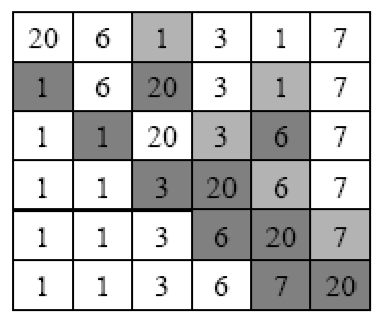
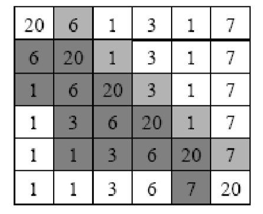
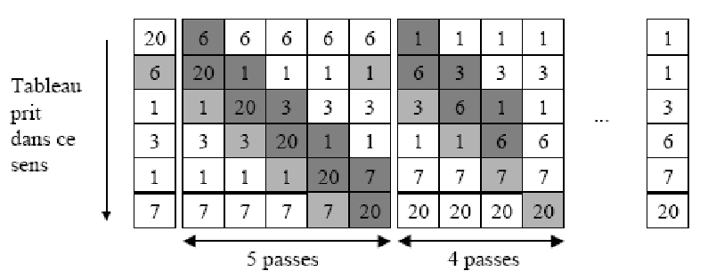

● On cherche l'élément de plus petite valeur pour l'échanger avec l'élément en première position; puis on cherche l'élément ayant la deuxème plus petite valeur pour l'échanger avec l'élément en deuxième position; et ainsi de suite.

Remarque:
● Il faut:
1 boucle pour parcourir le tableau et sélectionner tous les éléments.
1 boucle pour rechercher le minimum parmi les éléments non triés.
● Supposons que le tableau est noté T et sa taille N.
Algorithme sel_sort Variables indice, i, j, Tableau T[N] : entier Début
Pour i De 0 A N-2 Faire
indice ← i
Pour j De i+1 A N-1 Faire
Si(T[j] < T[indice]) Alors
indice ← j
FinSi
FinPour
temp ← T[indice]
T[indice] ← T[i]
T[i] ← temp
FinPour
Fin
Tri par insertion
● On considère les éléments les uns près en insérant chacun à sa place parmi les élément déjà triés.

Remarque:
● Il faut:
1 boucle pour parcourir le tableau et sélectionner tous les éléments à insérer.
1 boucle pour déclarer les éléments plus grand que l'éléments à insérer.
insérer l'élément.
● Supposons que le tableau est noté Tab et sa taille N.
Algorithme ins_sort Variables mem, i, j, Tableau T[N] : entier Début
Pour i De 1 A N-1 Faire
mem ← T[i]
j ← i
TantQue ( j > 0 et T[j-1] > mem ) Faire
T[j] ← T[j-1]
j ← j-1
FTQ
T[j] ← mem
FinPour
Fin
Tri à bulles
● On parcours asutant de fois le tableau en permutant 2 éléments adjacents mal classés qu'il le faut pour que le tableau soit trié.

Remarque:
● Il faut:
1 boucle pour parcourir tout le tableau et sélectionner les éléments un à un.
1 boucle pour permuter les éléments adjacents.
Algorithme bll_sort Variables temp, i, Tableau T[N] : entier
Permut : boolean
Début
Permut ← Vrai
TantQue (Permut) Faire
Permut ← Faux
Pour i De 1 A N-2 Faire
Si (T[i] > T[i+1]) Alors
temp ← T[i]
T[j] ← T[j-1]
T[i] ← T[i+1]
T[i+1] ← temp
FinSi
FinPour
FTQ
Fin
Tri par comptage
● Le tri par comptage consiste pour chaque élément du tableau a compter combien d'éléments sont plus petits que lui, grâce a ce chiffre on connait sa position dans le tableau résultat.
● Liste initiale:
52 10 1 25 62 3 8 55 4 23
● Poids du mot:
7 4 0 6 9 1 3 8 2 5
● Position:
8 5 1 7 10 2 4 9 3 6
● Ecrire l'algorithme de Tri par comptage Pour réaliser ce tri, utilisez plusieurs tableaux.
Algorithme cmp_sort Variables i, j, s, Tableau Poids[N], Tableau T[N] : entier Début // Remplissage du tableau Poids par les positions
Pour i De 0 A N-1 Faire
Poids[i] ← 1
Pour j De 0 A N-1 Faire
Si (T[j] < T[i]) Alors
Poids[i] ← Poids[i] + 1
FinSi
FinPour
FinPour
// Elimination des positions doubles du tableau Poids
Pour i De 0 A N-1 Faire
Pour j De 0 A N-1 Faire
Si ((Poids[i] = Poids[j]) et (i <> j)) Alors
Pour s De 0 A N-1 Faire
Si (Poids[j] < Poids[s]) Alors
Poids[s] ← Poids[s] + 1
FinSi
FinPour
Poids[j] ← Poids[j] + 1
FinSi
FinPour
FinPour
// Tri des éléments dans le tableau temporaire X
Pour i De 0 A N-1 Faire
X[Poids[i]] ← T[i]
FinPour
// Copie des éléments triés dans T
Pour i De 0 A N-1 Faire
T[i] ← X[i]
FinPour
Fin
Les méthodes de Recherche Rapide
Recherche séquentielle
● Le principe de l'algorithme de recherche séquentielle consiste à parcourir un tableau d'éléments dans l'ordre de ses indices jusqu'à ce qu'un élément recherché soit trouvé ou bien que la fin du tableau soit atteinte et le rang (indice) de l'élément est alors retourné.
Recherche dichotomique
● L'algorithme de recherche dichotomique est un algorithme efficace et rapide pour la recherche d'un élément dans un tableau trié. Le principe de cet algorithme consiste à diviser le tableau en deux parties et à comparer la valeur recherchée avec l'élément situé au milieu du tableau (l'élément médian).
Si la valeur recherchée correspond à l'élément médian, alors l'algorithme s'arrête et renvoie l'indice de cet élément. Sinon l'algorithme va répéter la recherche uniquement dans la partie qui peut contenir la valeur recherchée.